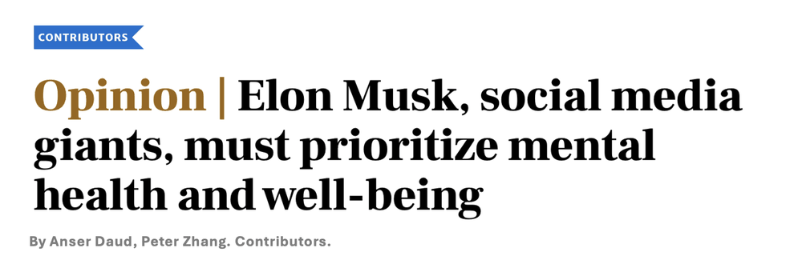

My advocacy focus has been on the intersection of public health, health policy, and evidence-based communication that builds public trust, from vaccine confidence to healthcare innovation. Underpinning this is my commitment to humanity and pluralism: society is only as strong as its least cared-for members.
This following is a list of print media publications related to health advocacy and human rights issues.
This following is a list of print media publications related to health advocacy and human rights issues.

Published writing
Modernized home care can help stabilize health costs
Elon Musk, social media giants, must prioritize mental health and well-being
Rigorous scrutiny of COVID-19 vaccines should bolster, not erode, confidence in immunization safety
COVID-19 and insomnia: Pills are not the answer
Although alarming, mutated strains of COVID-19 are not a cause for panic
The Right Diagnosis
As pandemic forces change, it’s a good time for Canadians to quit smoking
Becoming A Pit Crew For Frontline Healthcare Workers During The Covid-19 Pandemic
Long-term Strategy for the Containment of COVID-19
As we fight coronavirus, remember: society is only as strong our least cared-for person
The losses we can’t measure from the fall of Ukraine International Flight 752
How one great team’s victory set another one in motion
Gun violence in Canada is a public health crisis
Fighting Hatred: Christchurch
Understanding Through Faith
Five things to consider about vaccines
Mockery Never the Answer
Yes to Pharmacare
Take two pills. Or not.
Canada, the Cultural Mosaic
Voices of the People, Being Canada
Less talk, more respect
This Week’s Talking Point
Think before you speak
No pieces match your search.
The pen is mightier than the sword.